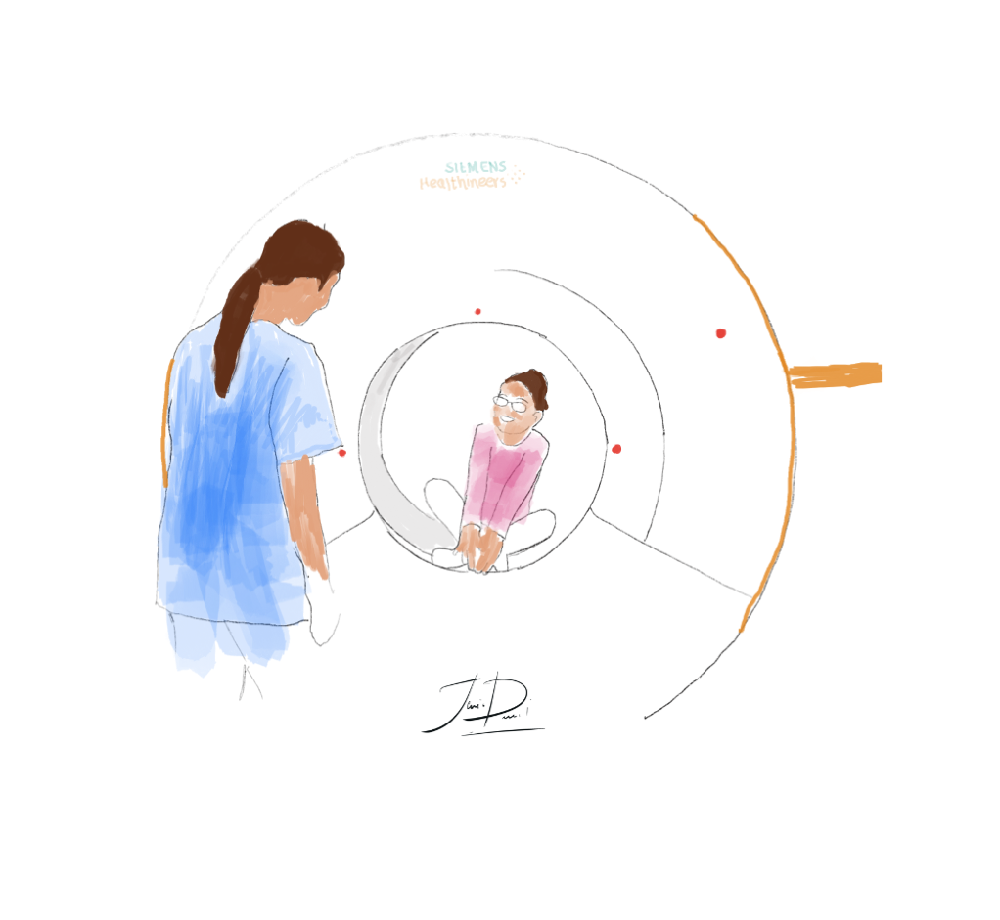
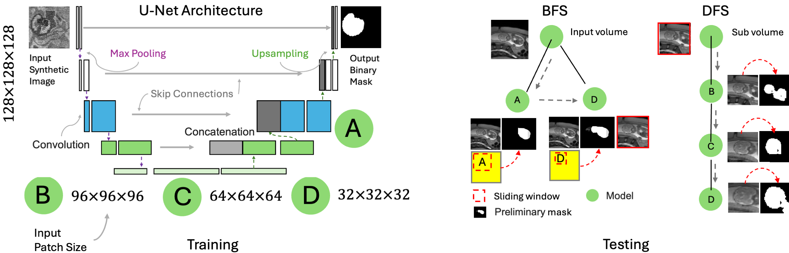
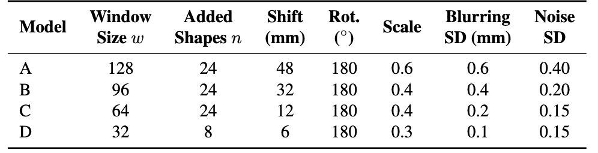
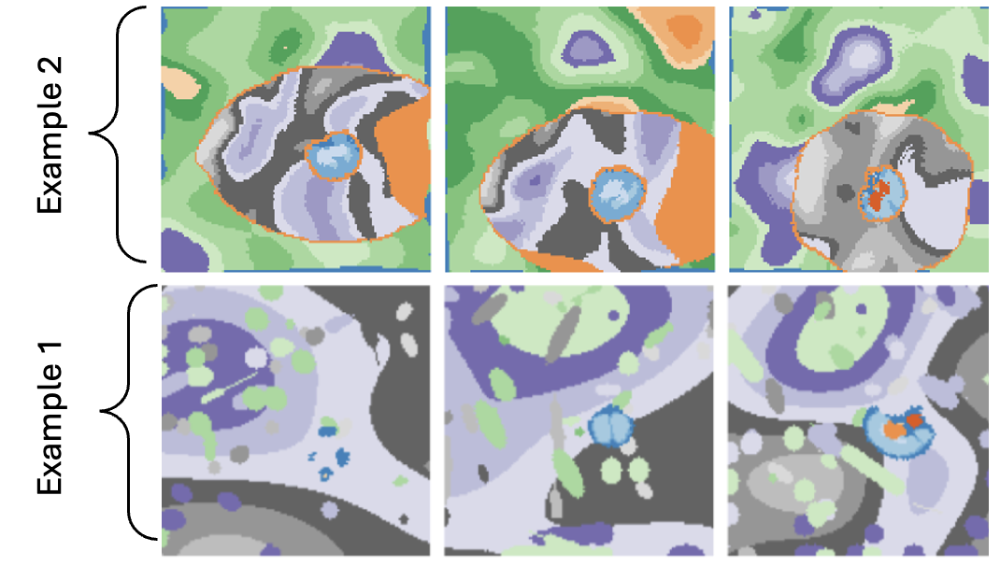
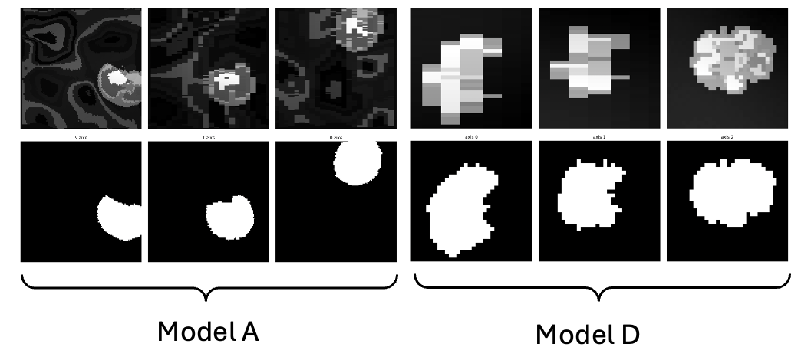
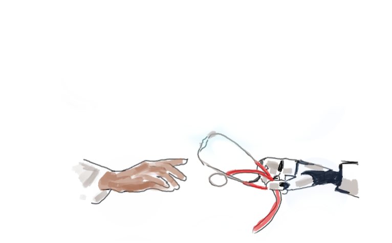

With a passion for AI-driven solutions in medical imaging, I focus on developing cutting-edge tools that elevate diagnostic precision and advance patient care. My research has been featured in some of the leading journals and conferences, including Nature, Molecular Psychiatry, MICCAI, and COLING.  In addition to medical imaging, I bring expertise in natural language processing, particularly in machine translation and information retrieval, where I also hold a patent. You can explore my personal projects on GitHub. I am currently available for freelance opportunities in prototyping, consulting, and technical advisory roles. For collaboration inquiries, feel free to reach out – let’s connect!
Also here is my updated CV,Linkedin profile, academic X page, Google Scholar page,and the most recent anonymous Visitors!
Acronyms Explained
| DL | Deep Learning |
| NLP | Natural Language Processing |
| MRI | Magnetic Resonance Imaging |
| ECG | Electrocardiography |
| AF | Atrial Fibrillation |
| CLIR | Cross Lingual Information Retrieval |
| YINS | Yale Institute of Network Sciences |
Selected Projects
I build a variety of small, innovative projects that aim to solve specific problems or explore new ideas. Some of my projects are:
| Title | Institution | Date | Topic | Info |
|---|---|---|---|---|
| Cascade U-Nets | MGH/Harvard | 2024/10/27 | DL for Segmentation | |
|
This project implements a hybrid 3D, multi-scale model for fetal brain extraction from MRI scans using a cascade of U-Net architectures. Using a Breadth-Fine Search (BFS) and Deep-Focused Sliding Window (DFS) approach, our framework achieves precise segmentation results in full-uterus stack-of-slices scans, even with limited training data and annotations. Our method employs a cascade of four models—A, B, C, and D—trained to focus on 3D patches of decreasing sizes from a synthesized set of training images augmented with random geometric shapes. At inference, we pool sliding-window predictions across multiple sizes to detect and refine the region of interest (ROI) that most likely contains the fetal brain. Subsequently, we derive an accurate brain mask through voxel-wise majority voting. Pipeline OverviewIn the BFS stage, Models A and D generate probability maps \( P_A \) and \( P_D \) across the full input volume \( I \), producing a coarse brain mask from the largest connected components across maps. We then perform a bounding box fit on this mask to extract the 3D ROI \( R \subset I \).

Figure 1: BFS-DFS Pipeline for fetal brain segmentation. In the DFS stage, Models B, C, and D progressively refine \( R \) through sliding-window passes, each stage narrowing the ROI and updating a binary mask \( S_{final} \) via majority voting across maps \( S_B, S_C, \) and \( S_D \), leading to an optimized fetal brain mask with minimized false positives. Label MapsTraining involves generating synthetic shapes around the brain label maps, which represent human-annotated segmentations of the fetal brain. To create synthetic images from these label maps, we utilized the following parameters, indicating the standard deviation for each parameter:

Here are two examples illusterating this augmentation where labels 1 to 7 point to brain structures and others belong to the background:
Table 1: Model parameters and sliding window configurations.

Figure 2: Example of synthetic shapes surrounding the brain label map to simulate diverse training conditions. Training DataHere are two examples of training data derived from the label maps: one for Model A, which is approapriate for the largest patches in the image, and another for Model D, which targets the smallest patches.

Figure 2: Example of synthetic images derived from the label maps for model \( A \) and model \( D \). Key Advantages:
This repository is an invaluable resource for medical imaging problems, particularly for body organ segmentation. It provides a robust tool for addressing challenges related to limited training data and sparse annotations. |
||||
| ECG2AF | Broad Institute | 2024/10/29 | AI for AF Prediction | |
ECG2AF Model Web ApplicationThis application demonstrates our ECG2AF tool, a clinical AI model designed to predict the risk of developing atrial fibrillation (AF) from ECG data. We have shut down the online demo temporarily but to run this app locally, place I developed this project using editors like BackgroundAI is widely used in clinical applications to improve risk stratification and intervention. This project focuses on cardiovascular disease, aiming to predict AF risk based on ECG data. ObjectiveOur objective is to allow users to:
How It Works
Prediction Outputs
Scalability Considerations
Visualization and ResultsThe charts in the application are created using Chart.js. Each chart presents predictions related to the uploaded .hd5 files, including AF risk, sex prediction, and age prediction values. 
Adding Nginx to Flask with DockerNginx acts as a reverse proxy for our Flask app in Docker, handling HTTP requests on port Benefits of Using Nginx
If you have any questions, feel free to email me. |
||||
| SEQ2SQL | YINS/YALE | 2024/10/29 | Sequence to SQL | |
What’s the Scoop?This project is all about turning natural language questions into SQL commands. We’ve got a model that uses LSTM and GRU units to make sense of your questions and turn them into SQL. Think of it as chatting with your database! Datasets We Played WithWe trained on some cool datasets:
Query ExamplesCheck out some killer examples:
What’s the description of a CH-47D Chinook?
What’s the max gross weight of the Robinson R-22?
What school did player number 6 come from?
How It WorksSo, how does it all come together? The model learns to associate pairs of natural language questions with their corresponding SQL commands, determining the best SQL query based on the input question. I accomplished this during my first year of grad school at Yale! I’m thrilled to see that my repository has received 93 stars and 23 forks on GitHub so far. If you have any questions, feel free to email me. |
||||
| EM4QT | University of Tehran | 2016/10/29 | CLIR | |
Dictionary-based Query Translation in CLIRSo, what’s the deal with this project? It’s all about improving the query language model by using top-ranked documents in a cross-lingual information retrieval (CLIR) setting. We use the Information derived from both source and target language documents, pulling them based on user queries. 
Query Translation IdeaThe main idea behind EM4QT is to grab relevant documents in both languages. When someone asks a question in their native language, we kick things off by retrieving a set of documents that match that query. This gives us our initial batch of source language documents. However, at the same time, we whip up an initial guess of translation candidates using a bilingual dictionary. Once we have both sets of documents, we fine-tune our translation candidates based on the top retrieved documents. This back-and-forth process makes sure we consider the most relevant and contextually appropriate translations, boosting the accuracy of our cross-lingual information retrieval. Expectation-Maximization AlgorithmThe EM algorithm is all about upping the translation quality by leveraging those top-retrieved documents in both languages. It boils down to two main steps:
This iterative refinement keeps going until we reach convergence, resulting in a more accurate translation distribution that enhances the overall quality of our cross-lingual retrieval. The full detail of the algorithm is published at IP&M Journal. If you have any questions, feel free to email me. |


Education
| Year | Degree | Field | Institution | Location |
|---|---|---|---|---|
| 2023 | PhD | Computer Science | Yale University | USA |
| 2015 | MEng | Software Engineering | University of Tehran | Iran |
Research Interests
I am broadly interested in medical image analysis, machine learning, predictive modeling, and data-driven methods and precision medicine, with a focus on:.
| - | Brain Segmentation |
| - | Fetal Brain Extraction |
| - | Functional Connectomics and Brain-behavior Associations |
| - | Optimal Transport and Data-driven Methods for Conectomics Data |
| - | High-Performance Computing |
Honors and Scholarships
| Year | Award | Details |
|---|---|---|
| 2022 | Best Paper Award | Graphs in Biomedical Imaging, MICCAI (url) |
| 2022 | MICCAI Student Award | Early Acceptance, Singapore |
| 2021 | Brain Initiative Trainee Award | Flash talk url |
| 2020 | Best Poster Award | Connectomics for NeuroImaging, MICCAI (url) |
| 2012 | Graduate School Fellowship | Ranked 5th in Undergraduate Studies, University of Tehran |
| 2008 | Ranked 331st/220,000 | Top 0.2% in Iran's Nationwide University Entrance Exam |